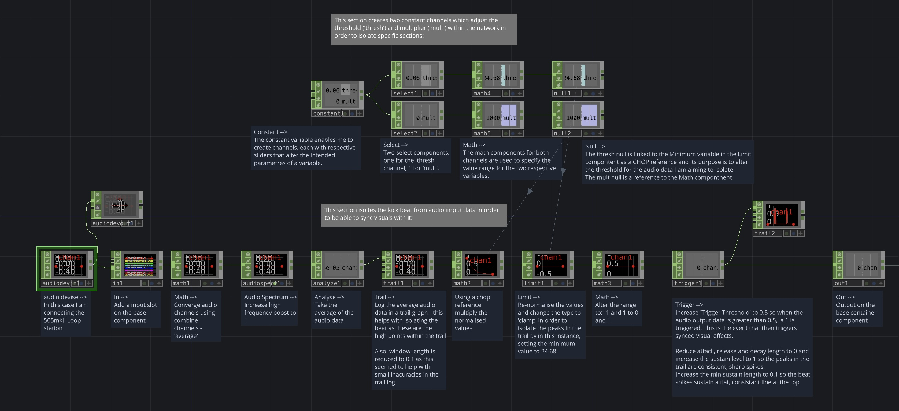
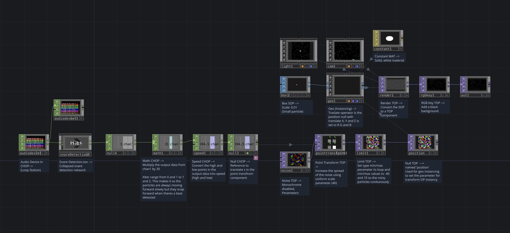
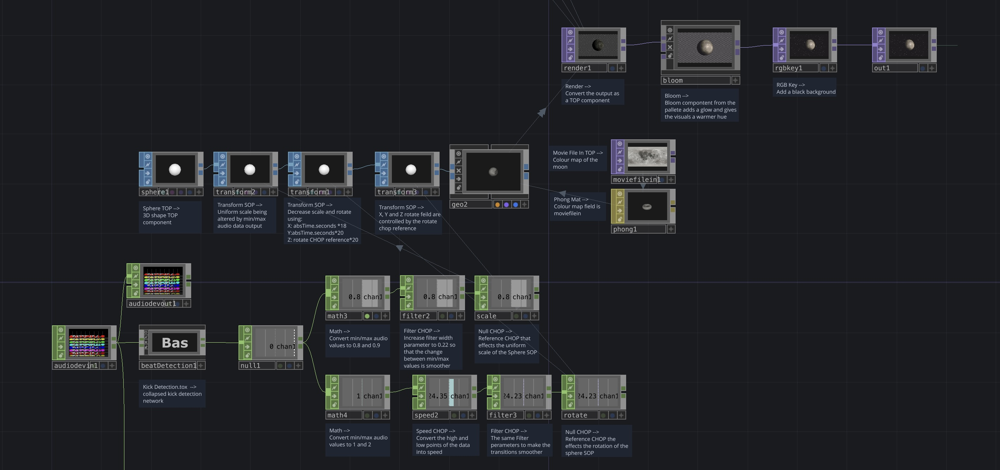
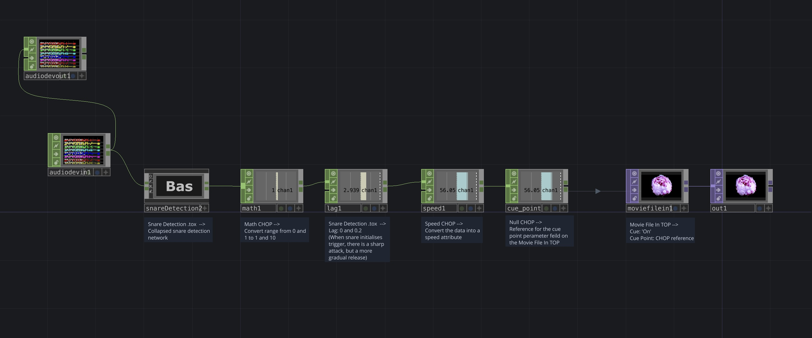
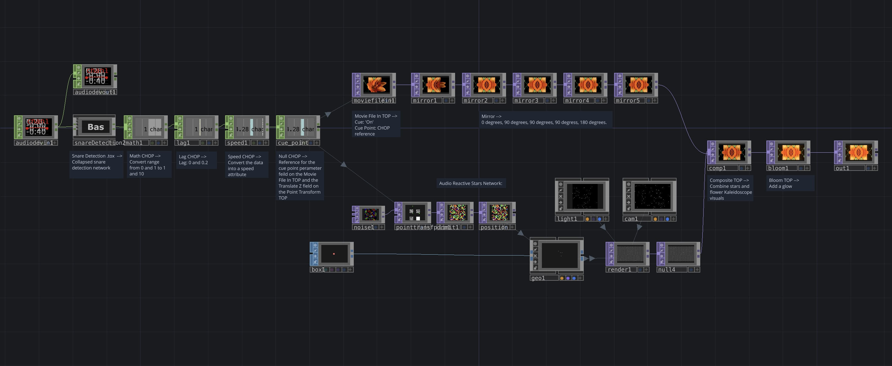
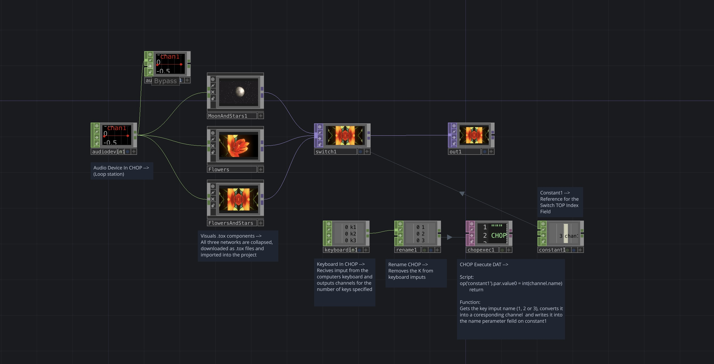

Coinciding with this project, I was borrowing a Boss RC 505-mk2 Loop station from a friend. This is a device which can record and loop vocals or instruments via an input in order to build up a musical track. By connecting the device to my computer via a cable, I am able to bring the live audio data into touch designer and through CHOP operators, can use this to drive real-time, interactive visuals.
1. Audio Analysis and Beat Isolation of Live Audio Input
Following on from the Touch Designer lessons on the VLE, in particular the audio analysis lesson, I decided to look into methods by which I can isolate the audio data from a beat. This is beneficial for two reasons. Firstly, as I am doing live vocal looping, procedurally I would begin by beat boxing as this forms the tempo for the vocals that follow. Secondly, In doing this, the transformations on the synced visuals are sharper and more accurate compared to using unfiltered audio data.
I found a tutorial on youtube (referenced below) which demonstrates how to make a kick and snare detection using CHOPs in Touch Designer. I more or less followed the tutorial exactly with the exception of substituting the Audio File In CHOP with Audio Devise In (the loop station) and tweaking certain parameters on the operators within the network to make them slightly more sensitive, so they can pick up on the noises I am able to make with my mouth (less percussive and distinct than a real drum beat).
This process enabled me to familiarise myself with the Trigger CHOP which rationalises the detection of a beat as a one and the absence of a beat as a zero (like a binary representation of data). This means that each beat translates to the same data and sustains the same length of time, creating more consistent changes when used as a reference to alter visuals.

I repeated the same process to also create a snare detection network, altering the parameters in the Limit CHOP so that it detects the more frequent snare-like sound I was using in this project.
bileam tschepe (elekktronaut) (2020). Beat Detection – TouchDesigner Tips, Tricks and FAQs 6. [online] YouTube. Available at: https://www.youtube.com/watch?v=gUELH_B2wsE [Accessed 25 March. 2026].
2. Audio Reactive Stars
While learning more about Touch Designer and following various online tutorials, I found one which demonstrated how to create a TOP instancing network with the point transform operator to make particles move towards the camera.
I followed this tutorial (referenced below) but used the data from the previously mentioned Snare detection network as a reference for the Z translate field on the Point Transform operator. Crucially, after the snare detection network that I had already created, I implemented a Math CHOP with the multiplier increased to 30 and the range changed to 1 and 2. The multiplier makes the movement triggered by the audio data noticeable and the range makes it so that the particles are consistently moving forward but they jump forward more when the beat is detected and initialises the trigger.

Acrylicode (2023). Audio reactive Galaxy tutorial. [online] YouTube. Available at: https://www.youtube.com/watch?v=J7s7aK2M3mw [Accessed 25 March. 2026].
3. Audio Reactive Moon
After making the audio reactive particles or ‘stars’, I decided to render a moon-textured sphere TOP with references to the kick detection data to control its scale and rotation.

This was adapted from the same tutorial that I followed to create the audio reactive stars, however changed the SOP to resemble a moon and altered the Math operators as well as the parameters that the references effect.
4. Syncing Video Playback with Audio
I was curious about syncing video playback speed with audio references. Once I’d created the Kick/Snare detection network, I wanted to use them to add quick pulses to a video's playback.
This was fairly simple to implement. I sourced a video online that I thought would work well for this purpose. I pasted the Snare detection network into the project and added a series of CHOPs.
On a Movie File In TOP there is an option in the ‘Play’ parameters window to turn on cue points. Once enabled, this opens a parameter field where a reference can be embedded to sync a video's playback with something like audio data. After the snare detection network, I used a Math CHOP and converted the range from 0 and 1 to 1 and 10. I also used a Lag Chop, setting the lag to 0 and 0.2. The result is that the video plays at normal speed but when a beat is detected, it jumps forward with a sharp attack but more gradual release.

5. Using Transform Operators to Create Kaleidoscopic Visuals
At this point I had decided that I wanted to add these different visuals into a switch network. The plan was to record live vocal looping and switch between the different audio reactive visuals as a means of demonstrating the project. For this reason, I wanted to create a third visual that combined aspects of both for continuity.
I pasted the Audio Reactive Video Playback network into a new project and added a series of Mirror transform operators with incremental rotation values to create a kaleidoscope-like effect. I then took the instancing audio reactive stars network and added this to the same project, combining them using a composite TOP and finally adding a Bloom TOP for a bit of a glow.

The result is some flowery kaleidoscopic imagery overlaid onto the same audio reactive stars from earlier.
6. Switch System
During a workshop, course leader, Jamie demonstrated to me how to create a switch network where by using a Switch TOP, Keyboard In, Rename and Constant CHOP and a CHOP Execute DAT with the script: op('constant1').par.value0 = int(channel.name), it is possible to create a network where I can switch between different visual outputs using keys.
This was crucial for my final project as my plan remained to be that I would film live vocal looping while showing the audio reactive visuals and I needed a quick and easy way to switch between channels.
Additionally, at this stage I replaced all of the Audio Device In operators in each network with an ‘In’ CHOP. This adds an input to the right of each collapsed network and there I could connect a single audio device in CHOP to all three networks.

7. Final Video
Once I had finished creating all of my visuals, I connected my computer to a projector via screen mirroring. I filmed myself making music with the loop station and had my laptop nearby to switch between channels. As I did this, I was simultaneously recording the audio in Garage Band.
When I came to edit the footage, I synced the audio and incorporated screen recordings from Touch Designer as B-roll.
Frustratingly, there is a slight delay between live music registering in Touch Designer. Likewise, screen mirroring can also introduce a slight delay. If I were to attempt this live, there may be a noticeable delay in the visuals. To combat this, I would probably design the work to be more forgiving of delays and opt for using a wired connection. Owing to this there are points where you can notice that my mouth is not in-sync with the vocals as I chose to match the recorded audio to the projections. Given that Touch Designer has an Ableton Live plugin (TD Ableton), I’m considering whether it would be worth trying this in the future to see if it reduces latency.
All that being said, I was quite pleased by the end result and am eager to continue experimenting with Touch Designer.